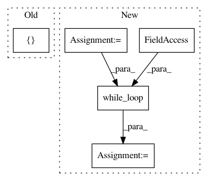

a4c4a4f2d33081806397784f96b113d5b3b32c9a,tensorforce/core/memories/prioritized_replay.py,PrioritizedReplay,tf_retrieve_timesteps,#PrioritizedReplay#Any#,149
Before Change
tf.while_loop(
cond=cond,
body=sampling_fn,
loop_vars=[sum_priorities, self.priorities, indices, loop_index, num_timesteps]
)
// Save batch indices.
assignment = tf.assign(ref=self.batch_indices, value=indices)
After Change
// Vectorized sampling.
sum_priorities = tf.reduce_sum(input_tensor=self.priorities, axis=0)
sample = tf.random_uniform(shape=(num_priority_elements,),dtype=tf.float32)
indices = tf.constant(value=0, shape=(num_priority_elements,))
def cond(loop_index, sample, priorities):
return tf.reduce_all(input_tensor=(sample <= 0))
def sampling_fn(loop_index, sample, priorities):
priority = self.priorities[loop_index]
sample -= priority / priorities
return (tf.add(loop_index, 1), sample, priorities)
priority_indices = tf.while_loop(
cond=cond,
body=sampling_fn,
loop_vars=(indices, sample, sum_priorities)
)[0]
priority_terminal = tf.gather(params=self.terminal_memory, indices=priority_indices)
priority_indices = tf.boolean_mask(tensor=indices, mask=tf.logical_not(x=priority_terminal))
// Store how many elements we retrieved from the buffer for updating priorities.
assignment = tf.assign(ref=self.buffer_index, value=num_buffer_elems)
// Store indices from priority memory.
with tf.control_dependencies(control_inputs=(assignment,)):
assignment = tf.assign(ref=self.batch_indices, value=priority_indices)
with tf.control_dependencies(control_inputs=(assignment,)):
return self.retrieve_indices(buffer_elements=num_buffer_elems, priority_indices=priority_indices)
In pattern: SUPERPATTERN
Frequency: 3
Non-data size: 5
Instances
Project Name: reinforceio/tensorforce
Commit Name: a4c4a4f2d33081806397784f96b113d5b3b32c9a
Time: 2018-02-08
Author: mi.schaarschmidt@gmail.com
File Name: tensorforce/core/memories/prioritized_replay.py
Class Name: PrioritizedReplay
Method Name: tf_retrieve_timesteps
Project Name: google/tf_mesh_renderer
Commit Name: 8aaabd6dfcd2f4ae5618ef08657bbba82e8bd69f
Time: 2019-05-28
Author: david.erler@gmail.com
File Name: mesh_renderer/rasterize_triangles.py
Class Name:
Method Name: rasterize_clip_space
Project Name: XifengGuo/CapsNet-Keras
Commit Name: 5cb43a9498315a16412cba20a59e6e76f9721b7b
Time: 2017-10-31
Author: guoxifeng1990@163.com
File Name: capsulelayers.py
Class Name: CapsuleLayer
Method Name: call